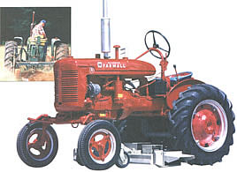
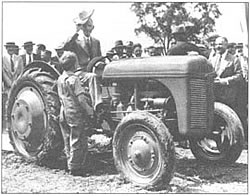
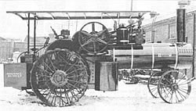
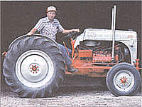
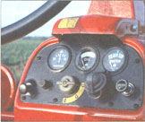
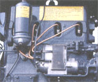

COUNTRY SKILLS
Finding your Farmall, "Johnny Popper," Oil-Pull, Fordson, or Rumely ... for less.
It's been almost 30 years now since I gave up trying to grow tomatoes on a city-apartment balcony and went looking for a country place. What sold me on my first old farmstead weren't so much the overgrown fields begging to produce again, the sucker-filled but stillbearing fruit trees, or the antique stone house and barn ...but the tractor and implements that went with it (for an added $2,500). The tractor was a gorgeous little Farmall "A," its paint shiny bright red, original decals intact, the huge lugged tires barely worn, and the muffler just rusted enough to look serious. Lined up behind it along the back of the barn were a stake-bed trailer on an old Ford axle, an antique snow plow, a single-bottom land plow, a 3-gang disc harrow, a fertilizing corn drill, and a sickle-bar mower with a wooden crank arm - all of them in perfect condition. And in the toolbox in the footwell of the tractor was the original owner's manual ...dated 1939!
The "A" had a new-looking Exide battery under the seat, plus a generator and starter motor, but I was all eager to try the crank. I checked oil and water, turned the valve under the gas tank on, turned the rotary ignition switch off, advanced the lever-and-quadrant hand throttle to the middle notch, pulled up on the choke nob, put the lovely long shift lever into neutral, and - hands shaking like a kid with a new tricycle - poked the crank into the hole under the grille in front.
My farming Great-Uncle Will had taught me how to crank-start decades earlier by spinning the big flywheel of "Johnny Popper," his Kermit-the-Frog-green John Deere. I grasped the crankhandle palm open so's not to break a thumb or worse if she backfired - something that can happen if you forget to retard spark on an old engine that gets its ignition charge from a manual timing-adjusted magneto. This Farmall had a magneto to provide spark, but since it had no spark-advance/retard lever beside the throttle lever or at the magneto, I assumed it was equipped with a modern self-retarding distributor head. Pulling up hard in the only direction the crank would catch, I pulled the engine through twice, then switched her on and cranked again. The stout little 4-banger popped, but that's all.
Recalling Uncle Will's directions for starting a cold, hand-cranked engine on a hot, humid summer day, I drained the sediment bowl under the fuel tank to get rid of any water in the gas, opened choke and closed throttle, and pulled her around several times to clear the cylinders and plugs. Then, decreasing both choke and throttle from earlier settings, I cranked again. She fired on the second crank, and after blowing a little more gray-blue smoke, began to chug happily. I climbed up into the dished-steel "hot seat" (an old tractor's transmission can heat up and toast your backside while the sun tans your top over a summer-day's work). I closed choke, adjusted speed, threw out the clutch, searched around for first, and eased up on the go-pedal. The little Farmall lurched and barely inched forward, so I threw the clutch again, fished around for second gear, let up easy on the clutch, and rolled out into the sunshine.
Was I on top of the world, or what? No longer an overpaid paper-pusher in an overpriced three-button suit, I was transformed into a plain but honest man of the soil - sturdy and self-reliant - sitting high up, free and in the wind on a real, honest-to-God farm tractor. Every boy-homesteader's dream, right?
ON TOP OF THE WORLD
Well, yes. But try as I might, I couldn't get that gorgeous little Farmall "A" tractor to work quite right.
Well, yes. But try as I might, I couldn't get it to work right. The tractor had a drawbar at the rear. The plow tongue attached to it with a pintle hook and trailed fine, but there was no way to exert significant down-pressure or keep the toe of the plow down. Even when I hand dug a starting furrow, I never figured out the knack of guiding and keeping it biting from my perch on the seat, having not yet realized that the concrete blocks piled in a corner of the pasture were needed for weight, so it just skipped over the weeds. I had a lot of fun flushing pheasants and chasing cottontails around in the fields, though.
I figured that the plowing might go easier if I mowed the goldenrod, burdock, and young poplars that were invading the fields. The sicklebar mounted up and ran with a satisfying click-click, but I couldn't get it to cut through the saplings. (Had I persisted I'd have broken all the teeth on the reciprocating cutter bar. I needed a brushhog - a monster-mower that slings a heavy steel flail through most anything that grows - but I didn't even know what that was.)
So, I paid a neighbor to hog off, plow, double-disc, and harrow-smooth the best field with his big modern tractor, then had a great time drilling in a fancy hybrid field corn. Along with the wildly expensive sacks of seed corn, the co-op gave me a stake and a metal sign with a lithograph of a half-shucked goldenyellow ear with the proud name, Dekalb, under it to put out on the road. I still have that sign somewhere.
What little of the corn I managed to drill deep enough that the crows couldn't get it, but not so deep it was lost in darkness forever, germinated in a week. The rabbits began nipping off each night's growth at ground level each morning. I tried chucking rocks at the fuzzy-tailed little monsters as I left for the city each morning, but it was hopeless. Having been plowed up, divided, replanted, and fertilized, the weeds reestablished with renewed vigor and choked out what the wildlife had left of my corn while I ran all over looking (alas, too late) for a cultivator frame and corn spades to fit a '39 "A." I tried hand-cultivating but after a week of rain couldn't find the rabbit-nipped stumps of new-planted corn in the "old growth" weeds. ln three weeks the pheasants and quail had moved back in and I sent off for a book on raising wildfowl for the wing-shooting market.
To save time, I hand-dug the vegetable garden, while the tractor rested snug in the barn. It always popped on the first crank and started on the second, and I had great fun hooking up the trailer and giving visiting city folks a real, bumpy, country hayride.
Had I worked at it, I'm sure I could have mastered tractor, weeds, and varmints. But in those days, the farm was my escape from work - certainly a more productive use of leisure time than watching pro football on the tube, but recreation just the same. And, when I finally quit the fasttrack and left the high-rent district to go homesteading for real, everything but a '52 Ford pickup and a few practical essentials was converted to cash. Including the "A." It broke my heart and I dream about that little tractor to this day. Gosh it was pretty! But, it was more important to be mortgage-free than keep a pet tractor.
And that's what old tractors are for most of us - pets. Not toys; that's too frivolous. But, seldom are they money-making agricultural machinery either. With a few exceptions, such as growing premium or organic produce, "pick-your-own" small fruits and such, commercial farming has become a mechanized industry requiring vast amounts of land and gigantic articulated-steering turbo-diesel tractors with air-conditioned cabs equipped with TV sets ...that cost $50,000 and up. Today's corporate farmer is a heavy-equipment operator who knows more about hydraulics and diesel turbochargers than soil. Most "family farmers" who persist in cultivating small acreage with old equipment work off-farm "to support the tractor" as they put it. What they mean, of course, is that it's worth working two jobs to keep the land in production and in the family rather than selling it off for a shopping mall or condos, permitting at least one more generation to live the good life on the farm. God bless.
SMALL-SCALE MODELS
Today's corporate farmer is really a heavy-equipment operator and seldom uses old "pet" tractors.
Every Countryman Needs a Tractor
The tractor confirms a commitment to a life on the land and to serious agriculture. (So what if you're husbanding two and a half acres of sand, scrub oak, and Johnson grass rather than 2,500 acres of prime Kansas wheatland?) It is the modern counterpart of the mythic cowboy's cayuse, General Patton's Sherman tank, or Peter Fonda's Captain-America Harley.
I'd put a good used tractor in the same expenditure category as your daughter's 15-year-old saddle pony. The price of a well-experienced horse or tractor is about the same, their housing requirements are the same, vet and shop bills the same. A small bale of first-cutting hay and a gallon of gas even cost the same, a dollar and change. You spend about the same amount of time riding around on them too - not as much as you'd like. Neither accomplishes a lot that can't be hired out cheaper and quicker, but they're as much part of country life as your huge, endearing fool of a dog or a vegetable garden that produces three times what you need.
So, be sure the barn roof's sound, the wood's split and stacked, the garden's weed-free, and the kids have their braces. Then, you can have yourself some real fun and go looking at tractors, talking tractors, and test-driving tractors. Visit all the local farm equipment dealers and farm-town service stations. Drive the country roads looking in farmhouse front yards for tractors with FOR SALE signs hanging off the radiator. Check the classifieds in country-town papers, in "Weekly Shopper" and "Want Ad" periodicals, in old-car magazines, and tabloids. Look at the bulletin boards at supermarkets, the VFW, the Fish & Gun Club, the Odd Fellows, and the Grange Hall, as well as at all the local hardware, feed stores, and the farm co-op.
A Brief History
Here are some of the fine old tractors you are likely to find, arranged on a timeline in the order that major features were developed.
Steam-Traction Engines
As early as the 1850s, farmer cops of a sort were hoisting Mr. Watt's steam engines onto horse-drawn wagons and hauling them from farm to farm to power threshing machines. The year 1876 saw the first steam-traction farm engine: A small railroad locomotive, really, fitted with self-steering front wheels in place of the cowcatcher and rail-truck, and tall, wide cleated-steal ground wheels in back in place of the big, half-flanged drivers. A steamer could haul a barn clear across Kansas (and did so as a publicity stunt), or pull a gang of a dozen moldboard plows through 6-foot-deep prairie sod. But it cost a small fortune to purchase them, required a crew to run them, and they were too low and unwieldy to cultivate standing crops or even turn around at the head end of farm felds laid out for draft animals. Plus, they sank to the firebox in soft soil and stalled on low hills. You can still find their hulks scattered throughout the grain belt, rusting silently where they were pulled off into fence rows, or anchoring a small, tree-grown oasis in the center of the field where they quit for the last time. You can usually get one for the hauling or for scrap-iron value. Restore and sell it if you like for $1.50/pound and up. But don't plan to drive it in the July 4th parade. Ten-plus tons of cast iron on cleated-steel wheels can fracture concrete and leave trench-like ruts in summer-warmed asphalt.
Mechanical Mule
Initially, the tractor was conceived as a direct mechanical replacement for a mule or a team of draft animals and a wagon. Four low wheels were placed at the corners of a rectangular iron ladder frame, with the pulling power in front and the driver in back. This was plenty good enough back when a man could raise a family off "40 acres and a mule" - even if another farm hand had to walk along behind to guide a land plow, or sit on the bouncing seat of a wheeled hay rake to dump it periodically. Like a mule, an early tractor would go forward and back if it felt like it, pulling implements fastened to the drawbar with a chain, pintle hook, or hitch.
But, cute as it may be, any tractor designed in the midteens or earlier is an example of primitive automotive technology - with a two-band clutch, sparktube ignition, once-through lubrication, thermosiphon gravity cooling, a hit-and-miss governor, and by-guess-and-by-God gear-selection. It is better suited to the annual Steam Engine & Old Tractor Festival or Drum & Belt Threshing Bee than to serious farm use. Put another way, like all engine-powered machines of the day, really old farm tractors are prone to break down at the worst possible moment. Farmers detested them, especially the badly balanced Fordson built by Henry and Edsel Ford. But they were still faster and cheaper than a team of horses.
A PART OF FARM HISTORY:
The tractor is the farmer's modern counterpart of the mythic cowboy's cayuse, General Patton's Sherman tank, or Peter Fonda's "Captain-America" Harley.
Power Takeoff
To export their power, the old steamers and early gas/kerosene tractors sported a large drum on one end of the crank-shaft that extended out of both sides of the engine (a big flywheel was fastened to the other side). The drum was fitted with a hideously dangerous wide-leather or canvas belt that ran around drums on stationary threshing machines and corn shellers.
The year 1919 saw the first tractor that might fill an everyday role on a modern homestead. International Harvester's Model "A" General-Purpose Tractor offered the first genuine power takeoff (PTO) with a flexible arm linking engine and accessory that could transfer engine power to mobile implements.
Electricals
In 1920, automotive batteries and generators were adapted to operate tractors' lights and engine starters. (And was I glad for the electric starter on my "A" when going out to plow snow in a 5°F blizzard.)
Hydraulics
Hydraulics first appeared on wheeled tractors in the 1934 Deere Model "AN." Fast-wearing mechanical linkages were replaced by hydraulic pistons actuated by non-compressible fluid that was pressurized by a tractor-powered pump and carried through flexible hose. Pistons could be bolted on anywhere to raise and lower heavy cultivators, plows, rakes, or lifting booms smoothly and effortlessly. They could make buckets scoop and remote hydraulic pistons and motors could extend power well beyond the tractor's frame - to saws and log splitters, rotary tillers, and hay-bale elevators. My "A" lacked hydraulics. But if she'd had them (and if I'd had any sense), I'd have kept her and saved the expense of providing individual power and hydraulics for the big cordwood buzz saw, log splitter, garden tiller, and more.
Three-Point Hitch
The '36 Ferguson-Brown introduced the three-point hitch - another simple but brilliant bit of creative engineering that combined the strongest form in nature, the triangle, with the most efficient forcemultiplier, leverage; with the most efficient force-transfer principle, hydraulics. (I use it to convince the kids that science and math really do have uses once you get out of school.) An implement, such as a plow, is bolted to two shafts attached at each side of the bottom rear of the transmission and to a single shaft attached to a hydraulic piston fastened at the top. The piston raises and lowers the plow, applies tractor-weight down-pressure and adjusts depth - all controlled with one lever.
Modern Features
In 1946 a separate implement clutch was developed so a "live" PTO could be run independent of main transmission and clutch. In the late-middle-'50s, tractor-makers adopted "on-the-go" and automatic shifting. Ford made power steering standard in 1956, and by the late '60s, tractors were thoroughly modern machines that looked and functioned and cost more like the tractor of an 18-wheeler than one of the true farm tractors built between '20 and '55.
But, unless you have the time and mechanical aptitude to teach yourself to pour Babbit-metal bearings, maintain Alemite lube fittings, and manual-spark magneto ignition, your cutoff year is about '25.
To cut and bale hay quickly and efficiently or power the silage chopper with your tractor, look for a PTO-equipped machine, dating from the late '20s, or, preferably, a decade later.
A post-'35 model with hydraulics and a three-point hitch (or a slightly older model that's been retrofitted) will let you pull a plow and haul a set of discs, use a powerbucket or forklift to hoist construction timbers or hay bales, move gravel and more.
Some early '50s models (the last of the two-cylinder Deeres especially) still look like tractors should, but have high horsepower, modern accessories, and lack the primitive features that make the real oldies so quirky...and appealing.
From '55 on, tractors are pretty much characterless, interchangeable and capable of fully up-to-date, automated farming, though at a fraction of the cost of a new tractor. The companies abandoned the old individualistic model designations as everything became numbers: Farmall Model 100 through 600, etc.; the higher the number, the more powerful or specially adapted the tractor. Yawn. Do your best to avoid the three-cylinder diesel and gas engines that were a bad idea in the '60s.
Only a handful of the hundreds of old-time tractor-makers are in business today. Some folded, some merged with others into major corporations, and still others were absorbed by stronger and more competitive firms. But old tractors are more serviceable than old cars and are slow to go to the junkyard. Many antiques with long-forgotten names languish in backs of barns, waiting a call to work again. So you'll know where to look for the service manual and parts for your old tractor, the following selected list attempts (for the first time ever in print that we know of) to rationalize the brand-name confusion caused by the many interlocking ownerships, mergers, and acquisitions that characterized a tumultuous industry over the first 50 of the past 70 years. There is no attempt to impose order on what was in fact a wild chaos, and arrange it in alphabetical order. Information is current up to about 1970.
Advance-Rumley; makers of the Oil-Pull tractors and Monarch Tractor were two of many firms merged into Allis-Chalmers over the years. After trying an arrangement , with Fiat of Italy, that ill-starred firm tried to quit tractor production in 1985 and sold out to the German firm: Klockner-Humbolt-Deutz. Contact owner-groups and collectors for more information.
Waterloo Gasoline Engine Co (Waterloo, Iowa) was purchased for 9.1 million dollars and change in 1918 by Deere and Co., which used Waterloo's bullet-proof 2-cylinder engine in the good, green John Deere farm tractors till 1960.
Hart-Parr, Nichols & Shepherd, and Cockshutt (Canada) merged in 1929/30 with the Oliver Chilled Plow Co. to form the Oliver Corp., which made Hart-Parr, Oliver-Hart-Parr, and Oliver tractors. Oliver became a subsidiary of White Motor Corp in 1960.
David Brown, a fine tractor from Great Britain, has been imported off and on for decades. Parts and literature are still available in the United States and Canada, or in England at last resort.
J. I. Case Threshing Machine Co., the major employer in Racine, Wisconsin, since 1842, manufactured threshing machines, steam engines, a luxury automobile, and since 1913, JI Case farm tractors. In 1960 they became a wholly-owned subsidiary of Tenneco.
Minneapolis-Moline resulted from the merger in 1929 of three Minnesota farm equipment companies. They made the Twin City, Minneapolis, KT, KT-A and M-M Twin City tractors through the midthirties. The first all-purpose (row crop) tractor designed was the Moline Universal of 1917. M-M Made Jeeps in WW II, tractors till '69, when it merged into White.
In the midthirties, a few Ferguson-Browns (Ford "9N" prototypes) were made in England by Harry Ferguson in partnership with David Brown. From '46 the Ferguson TE-20 was made in England and from '48 to '51 the Ferguson TO-20 and a few TO-30s were manufactured in Detroit by Harry, in a challenge to former handshake-partner Henry Ford. These were minor variations on the Ford-Ferguson "9N," but they were good tractors. Three of them on tracks went to the South Pole with Sir Edmund Hillory, and many chug on today.
When he won a patent-infringement award from Henry Ford, Harry Ferguson went to Canada and merged with Massey-Harris to form Massey-Ferguson of Toronto that bought the JI Case Plow Works, but sold the Case name back to the Case Threshing Machine Co. (that put it on Case tractors). They made tractors under the names Massey-Harris, Wallis (Cub), Ferguson, and Massey-Ferguson. In '58 they bought the UK makers of the Perkins diesel engine.
International Harvester was created by the 1902 merger of the giant McComick and Deering harvester companies along with their iron, twine, sawmill, and coal interests, plus the Illinois Northern Railway into International Harvester Co. Their product was named the Farmall, though the McCormick and occasionally the Deering name were attached to one or another model. Through existing dealer networks, they made the Titan and Mogul lines of tractors in styles ranging from the huge locomotive-like Mogul 1020 with an engine sporting a single cylinder that was over 8" across.
In the teens they made the Motor Cultivator, a rear-engine design that did not sell well. To counter the Fordson, in '24, IH brought out the Farmall, a high-bellied, row crop tractor that reigned supreme till Ford introduced the 9N in '39. Harvester then introduced the Raymond Lowey-designed "A" and was back in the fray.
Nichols & Shepherd of Battle Creek, Michigan was a major threshing machine and steam and gasoline tractor manufacturing in the teens and '20s. Their single-cylinder steam engines sold for $2,500 to $3,500 as late as '27. They sold the N&S 25-50 and others under their name as well as tractors made by John Lauson Co. In '29 they merged with Oliver, which in turn merged into White Motor.
White Farm Equipment Co., Oak Brook, Illinois, a subsidiary of White Motor Corp., Cleveland, Ohio was formed in '69 in a merger between Minneapolis-Moline, Oliver, and Cockshutt. That year, White began building the Oliver Model 1855, which was identical to the M-M G 940. At last report they were making the Field Boss.
Tractor Prices
A turn-of-the-century steam-traction engine cost more than most farms. Prices for early gaspowered tractors were lower, and as production increased and the technology improved over the next forty years, they fell steadily. A new Huber cost $1,300 in '36, an IH F-30, $1,280. In '39 Henry Ford stunned the industry by charging only $600 for his 9N. When Harvester countered with the Farmall "A," it was priced at $640 - half the cost of its predecessor. The bigger Farmall "H" sold for $750 on steel wheels and $950 on rubber. Prices were fixed during WW II, but inflation took off shortly after V-J Day. And today, a new farm tractor costs one hundred times those '39 prices.
The common-sense rule of thumb is that an old tractor in good condition will cost now about what it cost new; the bigger, the more expensive. But, I find that most tractors dating from the 'teens through the '70s are valued more on their condition than initial cost, size, or age, though a rare and notable old-timer or a modern tractor in like-new condition and "loaded" with hydraulics will sell for more than average. These days, when most old tractors aren't farmed, but used for show and to mow an occasional lawn, the size/cost relationship can work in reverse. If harking from the same model year and in equivalent shape, a midsized Farmall "A" will go for more than a big "H," while a little Farmall Cub can sell for more than either of them.
Prices range from around $500 for a basket case or a clunker in "Poor" condition to $1,000 or $1,500 for a model in "Fair" shape: rough but running. See the chart: "Used Tractors For Sale." You'll find a '36 Huber HK listed for $1,800; it is newly painted, in good running shape, and will sell for $1,500 - a few hundred more than the $1,350 it cost new during its long '27 to '44 production run.
Above it is listed a less powerful Rumely 6. Though it cost only $995 in its brief '31/'32 production life, the Rumely is priced $1,100 more than the younger Huber. Only 802 of this model were built, so the "6" is rare and popular among old-tractor buffs.
You'll pay about $2,500 for any well-preserved full-sized '39 or later tractor in "Good" condition (running well, okay cosmetics). An asking price ranging from $4,500 to $5,500 is typical for a '39 Farmall "A" (that cost $640 new) and counterparts with several attachments and implements, if in "Very Good" condition (fine cosmetics and running perfectly). A hydraulics/3-pt.-hitch-equipped Ford "9N" (that cost $600 new) will cost $7,000 and up if in show condition. Few more modern used tractors go for more.
A real antique - a late 1800s to '30s tractor in "Excellent" show condition is a collectors' item and price can depend as much on ribbons won as condition. The price list contains a '28 Hart-Parr going for a high-sounding $5,500. But when it or that '31 Rumely 6 are fully-restored and either one wins best-of-show for several years, their value will approach $10,000.
"NEW" OLD MODELS:
From '55 on, tractors were pretty much interchangeable and capable of up-to-date farming.
Determining Your Needs
Practicality would have you measure your acreage and determine how many plows your tractor must pull how fast and at what fuel-consumption rate to get the crop in during a minimum number of spring-planting days. But plowing doesn't have a whole lot to do with choosing an old tractor these days. All tractors will pull things (including plows, if they must). Decide what other features (PTO, threepoint hitch, hydraulics, front-mount accessories) you really want. Find out if you can get them on a pre-'19 antique, a pre-'29 realoldie, a pre-'39 oldie, or a more youthful tractor. The older it is, the more it will be a showpiece and hayride hauler; the younger and more capable, the more it will be a practical workhand, easy to find replacement parts for and repair.
Unless you are unique in the fraternity of Old-Farm-Iron admirers, your choice will be influenced as much or more by a tractor's character, looks, and personality. I say, follow your instincts and get the tractor that makes you grin like a fool, makes you warm all over, or gives you the shivers-a tractor that just feels like the partner and boon companion to go down the road with for a lot of years. Most won't be able to resist the angular lines, spoke wheels, and eccentricities of a kerosenefuel-era antique. A lot of ex-farm boys look around for the model that Granddad had or that they drove themselves in their youth. It's a lot like picking a pair of jeans or a good dog.
Evaluating an Old Tractor
"Horsepower" is an artificial measurement - actually about a dozen different measurements - rendered in foot-pounds of torque (whatever that means) and so confusing that old-time tractors were evaluated by the number of plows they could pull - one-plow, two-plow, etc. Today, auto ads bray on about little sewing-machine engines of 100 horsepower plus, so you may not be impressed by a farm tractor rated at only 14 hp at the drawbar, that rating reduced by gearing from its directdrive figure of 22 hp as measured at the crankshaft: PTO/belt/brake hp.
But cars are measured running at 5,000 rpm - which can move them well over 60 mph (and one heck of a lot faster) in top gear. Tractors need to go a whole lot slower, so have engines with large pistons that develop a great deal of real power (torque) at much lower engine speeds. They would probably rate at a hundred-hp or more if wound up to 5,000 rpm but are governed to run at around 1,000 rpm. And they are further "geared down" to leverage their power.
An old-timer running at top engine speed in top gear going downhill with a tail wind has to stretch to reach 6 1/2 mph, but it can pull as many plows with it as one, two, or four draft horses. A tractor rated as 14-22 is a large, two-plow tractor. A 9-16 is smaller, one-plow model, but still a genuine tractor. A 20-35 is a monster that can pull as much as a four-horse team or better.
A tractor isn't a daily commuter for carrying the family far from home at high speeds either. So, the standards of reliability, fuel economy, and safety used in picking a car don't apply. You want a tractor to have the power, accessories, and implements to accomplish the tasks you need done, to start reliably, run smoothly, and as safely as such a hazardous device is able, but primarily to be repairable by you or your mechanic ...and worth the money you pay for it so you won't have lost your shirt when it comes time to sell.
Check out the old tractors working the surrounding countryside. If most are red, its Farmall country. If they're mostly grass-green, it's Deere country. Gray or dark blue means Ford, Persian orange is Allis Chalmers, and mustard yellow, JI Case - due most likely to sales of whichever brand was franchised to the most aggressive dealer in the county fifty years ago.
If you can, go with the old-time sales leader. More parts and expertise will be available locally. But you should do well with any popular model of any familiar make. Just beware of unfamiliar brands, especially imports and "orphans" - machines made by a firm that's an ocean away and/or no longer in business, so parts may be hard to locate. Many firms merged into others and you'll be pleased to learn that that gorgeous, Roman-nosed '57 Canadian Cockshutt-30 you are drooling over is not a complete orphan after all, but is a third-generation White via a merger into Oliver. (See "Where Have All the Tractors Gone" on page 37.)
Most tractor manufacturers bought carburetors, magnetos, hydraulics, and other components from the same few outside suppliers. For example, between '37 and '65, all of them purchased diesel engines from the British company, Perkins, and there are a lot of them around, in good shape. So, that sturdy little '40 Leistershire Little-Ox diesel (an orphan import) that you can get for a bargain because it needs an engine, may not be that hard to restore after all - with a used Perkins. But, the Ox's steering linkages, wheels, gears, and other nonstandard parts may be nigh impossible to get aside from a trip to a British junkyard.
Country-living novices tend to pick tractors that are too small. Perhaps they are intimidated by, say, a huge Farmall "Super-MD" looming over them. Demand is greatest for the Farmall/McCormick Cub and JD Model "L" - both considered "minis" in their time, light-weights that were made for truck gardening. Don't get one if you will be plowing in deep-snow country or expect to do heavy hauling. The low, svelte (for a tractor), and sports carscale early Ford "N"s and the cheerful, friendly, almost cute Farmall "A" are almost as popular. They too are on a human scale but are "real" tractors (indeed, the "N" is the greatest two-bottom plowtractor ever designed). They are old enough to be reasonably priced but young enough to be fitted with an effective hitch, hydraulics, bucket loader, or most any other modern accessory. A full catalog of replacement parts is available for both too!
THE JOHN DEERE "G":
It plows hip-high snow, skids a cord of logs, and pulls three land plows at once. Now that's a tractor.
If you have heavy hauling to do, you really should consider such benevolent monsters as the Farmall "M" series or the 6-foot-tall John Deere Model "G" 33/27. It carries three tons of weight (and a half-ton more if you fill the tires with freeze-proofed water). Sturdy and reliable, four-square, and JD Green, the "G" lacks designer styling and burns kerosene, but it will plow hiphigh snow off the drive in a single trip out and back, skid a cord of logs out of the woods in one haul, pull three land plows at once, and really get the hay in if rain's threatening. Now, that's a tractor, mate.
But, my main piece of advice is to look for someone's "pet" tractor. You may have to wait a while for one to come on the market and you'll pay more but will enjoy greater reliability and fewer repairs. Or, buy a "rebuilt" - an oldie that's been restored by a mechanic or a farmer as a winter project. A clunker of any common make, model, or year bought for $500 will sell for at least $2,500 if restored to "Very Good" working condition - which means it has been renewed but not restored to pristine condition. A perfectly good engine might not have been rebuilt, and it may have a (better-working) 12-volt electrical system in place of the original 6-volt. The same machine in "Excellent" show condition and with every nut and bolt all-original and all-correct and polished to a gleam can be worth double or triple, but it can't plow any faster. Indeed, it shouldn't be plowed, as its function is to remain showroom-fresh for competitions.
If you have more time than money, plus the skills to restore an old tractor yourself, get a real clunker for peanuts and invest your own labor, not cash. Or, compromise and buy a machine in good enough condition it will do what you need done, and you can gussy it up at leisure.
The Inspection
Tractors are the least pretentious machines ever made, the best of them exemplars of aircraft designer Bill Lear's engineering principle: KISS: "Keep It Simple, Stupid!" There are no government smog controls, seat belts, or crash-resistant bumpers; no compound curves, little chrome, and no fins, whitewalls, or stereo-hi-fi's to obscure their utilitarian simplicity. With just enough sheet metal to keep rain off the ignition, and the underpinnings a foot or more off the ground, everything is accessible. Dress in old clothes, carry an adjustable wrench and stout screwdriver, and be ready to lift cowls, open caps, empty filter canisters and get down on the ground and poke around in often-greasy and dirt-coated corners and crannies.
In tractors that have been seriously farmed, dents and dings, condition of paint, and seat padding (if any), amount of rust, number of mouse, paper-wasp, and mud-dauber nests under the hood will tell you if the machine has been loved or neglected, stored outside or garaged in the barn, actively worked or ignored in recent years. "Beaters"-tractors worked to near death-can be made to look pretty good with a few cans of spray paint and $20 worth of decals. Especially beware of a tractor with aluminum paint on the muffler; tap it hard with your knuckle and don't be surprised if you knock a hole through the camouflaged rust.
A tractor's age is computed in hours run, rather than miles traveled. Engine life ranges up to 6,000 hours (since new or latest overhaul) depending on age and size. But 2,000 hours is typical. Only more recent models-and the fancier ones at that-have half-accurate hour-recording instruments and you can't be sure that they've functioned continually over 40 or 70 years. You'll have to judge condition by checking and driving.
Tractors were powered by wood/coal steam, coal oil/kerosene/paraffin, gasoline/petrol, naphtha, liquefied natural gas and propane, distillate or tractor fuel, diesel oil and combinations. Many early internal-combustion engines used gasoline to start; then when the manifold was hot enough to vaporize it (a brass carburetor was located on top of the exhaust manifold), fuel was switched over to less-expensive and more energy-concentrated oil. If you opt for a real oldie, you may need an antique-engine expert to teach you how to start and run it.
Following is a sampling of actual classified ads published in New York/New England periodicals during the winter of 1993-94 for farm tractors of all sizes dating from the 'teens. GC is good condition, EC excellent, F Fair (runs, but looks rough).
Pre-1960 Farm Tractors
'09 Geo. White 60 hp. steam-traction engine. museum quality. runs ex. $13,000
'1? Early Ford "T" converted to lug-wheel tractor. rough but complete: $1,800
'23 Farmall F-12. steel wheels rear, single rubber in front. Needs mag.: $900
'2? Farmall F-12. steel wheels. rebuilt mag, fuel pump. starts, runs good: $1,200
'23 Fordson. Stored over 60 years. no rust, complete. turns over and fires: $2,500
'28 Hart-Parr 18-36 runs OK, needs minor work: $5,500
'31 Rumley 6. (one of 802 made) Runs. steel wheels: $2,950
'36 Huber HK. Steel tires, runs good, new paint. $1.800
Three prewar Mnpls.-Molines: a Z: $850, a U: $1,250, an R: $750, a UTS: $850
'41 J Deere L with cult, el. st. "A-I" cond: $3,000
'44 Farmall Cub plow, discs, 5' mower, scoop, corn planter. EC $5,000
?? Massey-Harris 44. Rebuilt motor. $1,000.
?? J Deere G. New rear tires. p/s . new water pump. 3 pt hitch. VGC $2,500
40 Case. new tires, with plow. Runs good. $1,600
49 Allis Chalmers G. rear-engine truck gardener with middle buster, plow, listor, new rubber, show qualtity: $2950
?? J Deere B. New rear tires, p/s and water pump. 3 pt hitch. VGC: $2500
'47 Ford 9N. PTO. mower, hay rake, JD baler. all works. stored inside: $4,950
?? Ford 8N. all original, incl tires/oaint. 950 firs EC. $3,750.
?? Ford 8N. hyd front-mount snow plow $2,350. Less plow & mount, $2,100
?? Oliver 77. w/ loader. $2,250
?? Farmall M. new rear tires. back plow. $2,000
?? Farmall Super M. Good rubber. narrow front. 12V elect. $1,450
'5? Oliver 6 cyl diesel w/ front-end loader. down pressure. hi/lo range $3,500
'50 J Deere B. runs, looks good. $1,500
'5? Farmall Super A. hydraulics, land plow, middle buster re/b motor: $2500
'4? Farmall Cub. Garage kept. full hydraulics. bucket. land and snow plows, corn planter, old haying eqpt. orchard sprayer. Gently used. $7,700
'57 Ford 800. rebuilt engine. EC. some eqpt. $3,400
Modern Tractors
Riding Mowers
'92 Craftsman 12.5 hp. 42" mower deck. 20 hours. $1,200
'86 Craftsman 12 hp, 2-cyl. B&S engine. 36" mower: $1,000
Mini Tractors
'93 Gilson GTHE 18 hp, 42" mower & snowblower, wheel wts. $3,850
'88 JD 140. 14 hp., 2 cyl. Kohler. Loader lifts 400 Ibs. 48" mower: $3,500
'88 Kubota.14 hp., 2 cyl. diesel. 3-pt hitch. front/back PTO. 42" snowblower: $3700
"Compact" Tractors
Cub Cadet 2072. 20 hp. 413 firs. hydraulics. 50" mower. 45" snowblower. $5,430
Bolens 17 hp diesel. 4- way hyd snow plow. 4' snowblower, mower 53 firs. $7,200
Ford 1520 4WD. auto. loader, backhoe, rototiller, mower, brush-hog. more. $8'500
Full-Sized Farm and Industrial Tractors
'65 Massey-Ferguson diesel with $4,000+ in new parts: $6,500
'70s Case with Lord high-loader. Good farm tires: $4,000.
'80 JI Case 580C w/ 3 yd snow bucket, extendor backhoe and new tires: $16,500
'80s Massey Ferguson 85 hp diesel. low hrs. 3pt hitch. full options. $15,500
'86 JD 750. Diesel 22 hp. 4WD. 3pt hitch. Front loader. Good farm tires: $7,000
'91 Kubota backhoe/loader. 355 firs. snowblower, brush hog. $20,500
Tractor Pulled/Powered Equipment
And here is an idea of what you can expect to pay for used farm implements: antiques, old, newer, unpowered and PTO-powered, a few with their own engine.
Brush Hog. 5' wide: $850
Corn Planter. Plateless. JD M 1240, 4-row. GC: $500
Corn Planter. Ford . Fair Condition: $350
Corn chopper. New Holland Super 17: $1,500
Hay Rake. MH side delivery on steel wheels: $100
Hay Rake. JD wheel type: $500
Hay Rake. New Idea rollbar: $1,650
Hay Baler. Roanoke 21hp: $900
Hay Baler. JD 410 round baler: $3,750
Hay Elevator. 40' 2 hp elec mtr. $425
Manure Spreader. JD. 3 Yd. EC: $700
Howard Rotovator. for 3pt hitch. GC 80" wide: $800
Checking the Engine
Don't start the engine yet. First, remove dipstick or oil-level-check plugs to inspect engine oil. It will probably be newly changed (perhaps, for the first time in years) so will look fresh and clear. Remove the oil filler cap and run a finger as far down the filler pipe as you can. If pipe or cap are crusted with thick black crud, the engine oil hasn't been changed as often as it should. But, some old mules are so loose and forgiving, they'll run fine with old oil - if the filters have been changed regularly. It may take some arm twisting and surely will take a wrench or two, but insist on inspecting oil and air filters. If the filter housings are rusted in place (and, after a few decades languishing in the open or in a leaky shed, some will be - even if the engine "runs good" as they say in the ads), look for another tractor.
If filter housings come off but the filter elements are caked solid or disintegrated, look elsewhere unless the tractor has been in dead storage for decades. Shake dry air-filter elements. If only a few dead bugs fly off the inlet side of the first stage and very little dust comes out the inner, that's good-even if the elements look old. Old-style oil-bath air filters shouldn't have too much mud built up in the base of the canister. To check, you will have to drain most oil filters by removing the square plug at the bottom of the canister. If oil is thick and murky while the dipstick shows bright clean oil, the filter is clogged so much it is being bypassed, or the owner has changed the crankcase oil but never ran it through the engine.
Modern paper-element oil filters will be discolored, but don't be too concerned unless there's mud in the creases around the outside. If you find an old-style felt oil filter, get your hands good and greasy squeezing the element and scraping inside the canister to see how much mud has accumulated in the felt and how much has settled to the bottom of the canister. Dark, even murky oil is okay, especially in diesels, but if your hands come away thick with grit, the filter hasn't been renewed for far too long. I've seen tractor oil filters caked so solid that the element had to be chiseled out. They hadn't been filtering the oil at all for years. (If you take a tractor with an old-style oil filter, replace with new paper-element filters if you can.)
Don't try to get at the fuel filter - especially in a diesel. You can introduce grit unless you take the time to do it right. If you can't, drain it through a small push-valve at bottom, remove the sediment bowl under the carburetor if it comes off easily to see if it's full of water or if crud has been allowed to build up. Don't try to remove a badly stuck bowl unless there's a new gasket handy.
Look in the radiator. An oil film on top of the coolant may mean a leaking head gasket or worse, a cracked block. Cheesy crud caked in the cap and a chalky buildup in the tubing indicate that a lot of water has boiled away, depositing minerals. Suspect leaks.
Check fluids in the magneto drive and hydraulic reservoirs - including automatic transmission, brakes, and power steering on a younger tractor. Magneto drives will contain light oil or (in winter) kerosene, which should be clean and clear. Hydraulic fluids should also be clear and clean; newer dynamic hydraulic systems (that move a stream of fluid to operate hydraulic motors) use a thin fluid. But many older hydrostatic systems operating shortstroke actuators only use engine oil or thick transmission fluid. In either, murky fluids may mean neglect or considerable wear in the pumps.
Unscrew both engine oil and transmission drain plugs just enough to let a little lube drain out (all over your hand and down your wrist and into your sleeve unless you are careful). Collect drippings in a can. If they are gritty, dirt is getting in or there is excessive wear somewhere. If you get water, it may be nothing but condensation. Or, it may mean a water leak in the engine, or a left-off filler cap letting rain in. If you find water in the transmission, suspect a split shift-lever boot.
Look on the ground for puddles of oil or hydraulic fluid and other obvious problems, like flat or deeply gashed tires. Then, if it holds up so far, go for a ride.
Tractor-Drawn Implements
Like a horse or mule, to accomplish much, a tractor needs to be harnessed to working implements. Chances are that the original hay baler, manure spreader, discs, and plow made to fit that '29 JI Case "L" (with PTO) you are admiring are rusting silently in a longforgotten tree line bordering an abandoned field miles away. Finding antique land plows in working condition is harder than finding old tractors. Most Deere Walking beam plows still alive anchor a circle of geraniums decorating country front yards.
Advertise for implements and you may be luckier than I was trying to locate cultivators for my Farmall "A." Implements are advertised in the same classifieds where you looked for your tractor. Universal PTO-powered implements will fit most tractors. Wheel-driven implements from the horse & wagon days can be pulled by any tractor. I have been known to risk a floating kidney or truncated extremities sitting on the God-awful-hard cast-iron seat of a clanking old mowing machine. The sickle-bar cutter was powered by a "bull wheel" - a big ground-driven cleated wheel that transferred its rotary motion to the back-and-forth cutter bar with a hideously dangerous exposed-gear transmission that required constant oiling. It was one miserable ride. I was constantly splattered with oil, and chaff stuck to the oil - but it was still better than mowing by hand with a scythe. I've also taken my shift on a rear-dump, riding hay rake - also a rough ride, but less perilous and a lot easier than hand-windrowing.
I've never ever seen an old woodbed manure spreader that wasn't rusted and rotted to compost. But you can find used and still-working steel-bed spreaders in some farm yards, and new small-farm spreaders in homesteading equipment catalogs. A rotovator or independently powered garden tiller made for lawn tractors can replace plow, disc, and harrow on small spreads if repeated passes don't take too much time for you. Or, you can have your land plowed by a neighbor with a more modern rig. Then so long as you don't let weeds reestablish, you can pull discs and bedspring harrows to stir and smooth the soil before planting year after year. However, if you plan to let fields lie fallow every third year as you should to maintain fertility, don't let weeds mature or you'll have to plow sod again. Crop with annual wheat or rye in spring and fall, let weeds germinate and grow briefly in between and disc the "green manure" in before any plants get a sod-deep foothold.
If you fancy natural, organic gardening methods, think twice before planning to farm with an old tractor by adopting the "no-till" methods being touted by the U.S.D.A. and promoted by the agricultural chemical companies. It sounds good at first; you don't deepplow and risk soil erosion, but lightly disc in plant residue - which adds plant matter to the soil - then plant into the rubble. But, controlling weeds and insects is all done with a variety of chemicals. Better to disc weedy residues lightly in fall, then plan on tilling or harrowing soil several times before planting in spring. Each time you disc, you kill a new crop of newly germinated weeds and bring a new batch of seeds and pests to the surface to be eaten by birds or killed by exposure.
The Road Test
Have the owner show you how to start the tractor. If it's been sitting for a while, the start-up may take a while; you may even have to remove and clean spark plugs. When it does turn over, a shower of rust may erupt from the muffler and the fumes may be a little smoky at first. But, once warmed up, there should be no smoke. Gas-engine exhaust should have the sweet, nostalgic smell of a non-emissions-controlled gas engine. (And, with some experience, you'll be able to tell if the mixture has gotten too rich or lean by smell and engine sound - then be able to adjust it yourself by turning a single screw for mixture and another for idle speed.)
Diesel exhaust stinks, but should be clean. With either fuel, a little smoke on acceleration or a gear change probably means a tune-up is needed. A lot of smoke means rings are worn. A steady, thin blue smoke indicates enough wear that a rebuild will be needed soon - at about $1,500. Listen to the engine. Diesels are noisy, especially on start-up, but quiet down to a regular valve-rattle. A slap-slap sound or irregular clunk in any engine is cause for deep suspicion.
Now, go. Shifting will take practice and the gearbox may be stiff till transmission grease warms up. But it should go into all gears without too much wrestling. The clutch should operate without shuddering, and if not worn, will engage before the pedal or hand-clutch gets too far out (in an old tractor, you may have to fish around for the correct gear and double-clutch to avoid grinding). Try the hydraulics and other accessories. Try the lights, brakes, and other luxuries, if any. Don't expect to find a horn, heater, or air conditioning in an old tractor, though some top-of-the-line, late '40s and newer models with full cabs have them - radios too.
Tractor steering is far from precise at its best. If the wheel has more than a quarter-turn of play, if turning is very hard, or if steering seems to catch, then free up suddenly, suspect worn steering-gearboxes or worn linkages, tie-rod ends, or steering knuckles. If the tractor drives as though it is limping, if front wheels wobble visibly or slop from side to side, suspect worn kingpins, bad hubs, bearings, or spindles. If rear wheels wobble, it could be a bad hub, internal gear, bearing, or bent stub axle inside the iron axle housing. More likely, it is a bent or rusted wheel rim or a tire that hasn't moved for so long it has a flat spot that will run out in time. If brakes don't seem to work, stand on the pedal (or pedals, one for each side). If they pull to one side, brakes need adjusting (or if hydraulic, need bleeding). If they squeal or grind, the band or pads are probably worn to bare metal, which can make a fingernails-on-blackboard sound that sets your teeth on edge but is not critical. Tractors have a predictably hard time going fast enough to need brakes very often. Really old models don't even have brakes; all will brake automatically when you decelerate in gear, and some old worm-gear drives come to a halt when you take them out of gear.
Don't spend too much time groping around for the parking brake. On most old tractors it is reverse gear and a couple of wood blocks.
Turn hard both ways. Speed up and slow down. Go out on the road, put her into high and "speed." The transmission will yowl and whine. But any bad bearings will reveal themselves with a grinding sound. Try all the controls and switches, especially hydraulics. If you don't see the hydraulics work, don't pay extra for them. Hydraulic pumps and pistons are easily ruined through simple neglect and are expensive to replace or repair.
After the ride, check all around again and note any leaks in water hoses or around fuel tank, water or fuel pump, and any fresh oil seeps. If you are reasonably sure the tractor has small problems you can't repair yourself, or if you even remotely suspect major problems, find a qualified tractor mechanic and pay him $50 to come out and check it over. Indeed, if you are a novice and the money is more than you can spare, have the tractor checked no matter how good it looks, sounds, and drives.
Not being roadable, tractors aren't licensed or titled. Insist on seeing the owner's bill of sale. Be sure chassis and engine serial numbers jibe with numbers on the document. Do your dickering, make up a valid bill of sale (you can find 50statelegal forms at a stationers), give over your cash, load your tractor on a car hauler, and take her home. On the way, get as much service and maintenance done as you can. Whatever you do, don't have an old tractor steam-cleaned or you can strip paint, melt rubber, and ruin electrical parts. But, a warm-water pressure-cleaning/degreasing of the outside and a complete fluids change at a tractor shop or big-truck dealer will save you more than a little time and plenty of disposal problems. Indeed, if mechanical or body work is in order, you may as well drop the tractor at the shop, discuss the details, and then drive right home and start making tractor space in the barn - if you are lucky enough to have one.
Endnote
Finally, tractors aren't cheap to buy or keep running. Lacking that barn, you'll need to buy a long shed to keep tractor and implements out of the weather. Equipment sheds aren't cheap either. Plus: You'll need permits from the fire department to install a farm-fuel tank and from the environment protection officials to store and dispose of lubricants.
Repairing a flat tire requires a big jack, huge tire irons, and a strong back. Imagine having to remove a stone-flat 1/4-ton mud-caked cleated wheel in the middle of a field full of 8-foot-tall corn. In a driving rain. A half mile from any road.
And barn calls by a mechanic or field tiretruck cost $50/hour - including travel time.
Do you really need a tractor that bad?
Sure you do!
Well, so do I...and if you're free for another half-hour (and promise not to grab it before I can get the cash together) I'll show you this ...gorgeous little Farmall "A," its paint shiny bright red, original decals intact, the huge lugged tires barely worn and ...oops, I already said that didn't I?
Well, I've been waiting along time for another one. It only costs $2,500 (a figure with a familiar ring, come to think of it), but I still have that Dekalb hybrid corn sign somewhere ...
Earth-moving
Some used farm tractors will come with accessory telescoping booms or front-end bucket loaders or plows operated by a pneumatic cylinder, hand cranks, or hydraulics. But farm buckets are wide for scooping lightweight feed grain, bedding, or manure, and booms are long for lifting hay bales or feed sacks into the loft. They aren't designed for moving earth in quantity. Plus, removing and reattaching this weighty gear requires stout lifting equipment - big jacks or a barn with heavy overhead beams and a pair of heavy-duty ratchet-equipped block-&-tackles... or another tractor.
Better, if you plan to do more earth-moving or construction than farming, would be an industrial tractor that is designed more for lifting and pushing than pulling and hauling. Most carry a compact bucket loader stout enough to excavate a cellar hole, and a rear-mounted backhoe that will dig a 9'-deep trench for a water pipe or septic-tank leach line. They have hydraulic support-feet that swing out at the sides and set them in place, level and firmly, so they don't roll when you dig and don't tip when the bucket is full.
Construction tractors date from the '50s to the present, so are decades younger than many commonly available farm tractors. In good shape, and with half its 2,000 hours of operating life left before an engine, transmission, and hydraulic rebuild become necessities, a loader/backhoe will cost the better part of $10,000 (and often more) no matter the age. Even a clunker in fair to poor condition goes for $2,500 minimum.
SOURCES
You must have the service manual for your tractor. Fortunately, most are available ...somewhere. Here's where to look.
Intertec Publishing Corporation, PO Box 12901, Overland Park KS 66212. This 100-yr-old firm publishes the I&T Shop Service Manual series, including manuals for most tractors.
Motorbooks International, PO Box 1, 729 Prospect Street, Oceola WI 54020 (free catalog or order at 800-826-6600) sells thousands of books and publishes scores of their own.
Antique Power, "The Tractor Collector's Magazine." $20/year from PO Box 937, Powell OH 43065. Tel: (614) 848-5038. Articles and ads for old tractors, parts, literature, meets.
IMPLEMENTS
Country Mfg. Inc. PO Box 104, Fredricktown OH 43019 (614) 694-9926. Makes and sells new homestead-scale implements at approximately the cost of used full-size including 25-bu. and 75-bu. manure/compost speaders, small-sized farm (dump-bed) wagons, harrows, spreaders, and horse barn accessories. Free catalog.
|
 Henry Ford intoduces his new 9N to the press in June 1939. Initial sale price was an astounding $600 and began a new era in price competition. HENRY FORD MUSEUM AND GREENFIELD VILLAGE |
 Between 1905 and 1916, Rumely topped its steam-engine line with several huge models. Here, an Advance Rumely 25-hp steam-engine tractor was certainly a formidable piece of equipment, but not very practical. (MOTORBOOKS INTERNATIONAL) |
 This 1952 Ford 8-N includes a Funk V-8 conversion consisting of various engine and gearbox adapters, as well as two vertical straight pipes for the exhaust. The sound is very impressive. (ANDREW MORLAND MOTORBOOKS INTERNATIONAL) |
|
 nstrumentation was much improved on the numbered Farmalls that appeared in mid-1954. |
 Oil filter and magneto or a 1932 Farmall F-20, powered by a four-cylinder, overhead valve engine. (ANDREW MORLAND/MOTORBOOKS INTERNATIONAL) |
 |